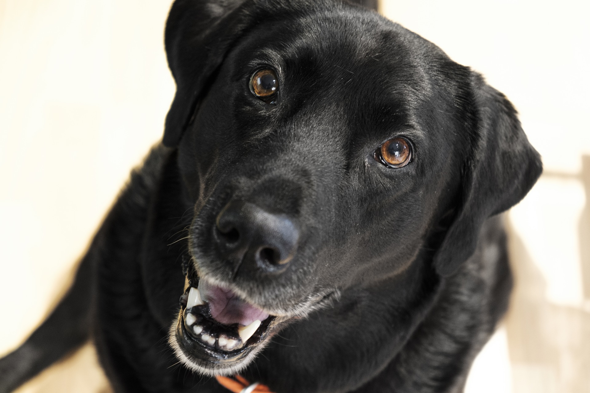

Get To Know Us
Founded in 1994, we are a family-owned classic and collector car dealership. Located in Soddy Daisy, Tennessee, we are committed to make sure buying a Cooper's Classic Cars vehicle is the only way to invest in a vintage car or truck. For over 25 years, we have built a reputation in the Tennessee Valley area for offering quality used vehicles, honest sales practices, and exceptional customer care.
We work every day to maintain the reputation our business was founded on. To provide the best quality cars and trucks and to be as honest and clear as possible with every customer is our number one goal. At Cooper's Classic Cars, we are family and we treat our customers as such. When you visit our showroom, be sure to be on the lookout for our greeter, Daisy. She really likes visitors and loves to be rubbed behind her ears.
Above: Our Professional Team (from left to right) Don Cronan, Finance Manager; Greg Porter, Sales Manager; Jim Wiseman, President; Ellen Moore, Receptionist; David Harper, Appraiser; Karen Hughes, General Manager; Hunter Haynes, Assistant Manager; Jeff Thomas, Sales Associate; Wilson Martin, Sales Associate
Below: Our showroom greeter, Daisy
